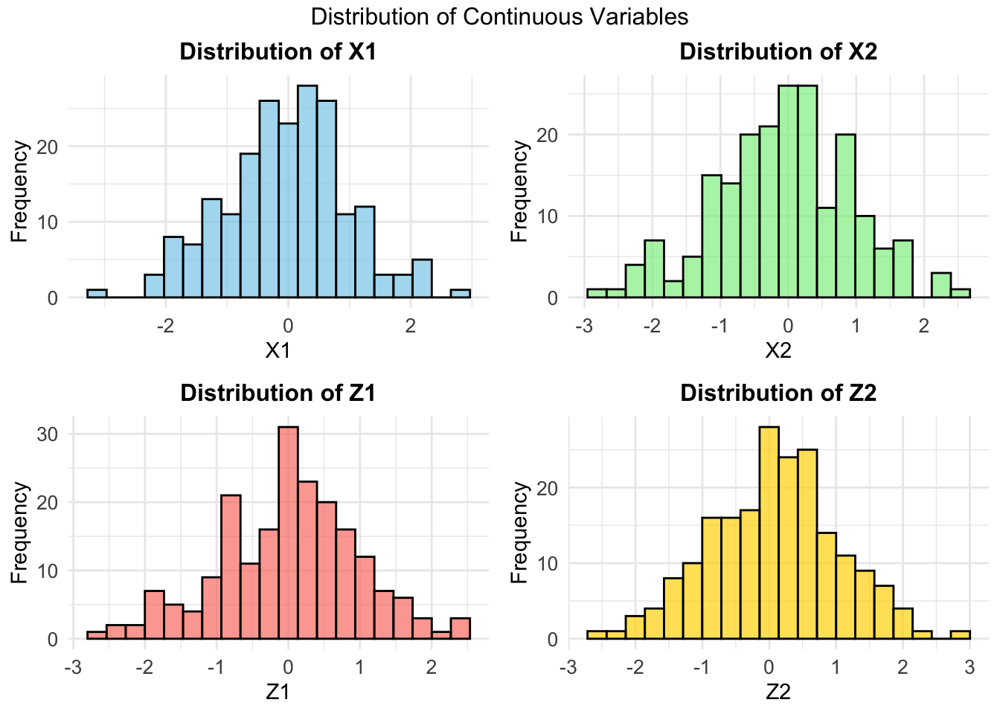
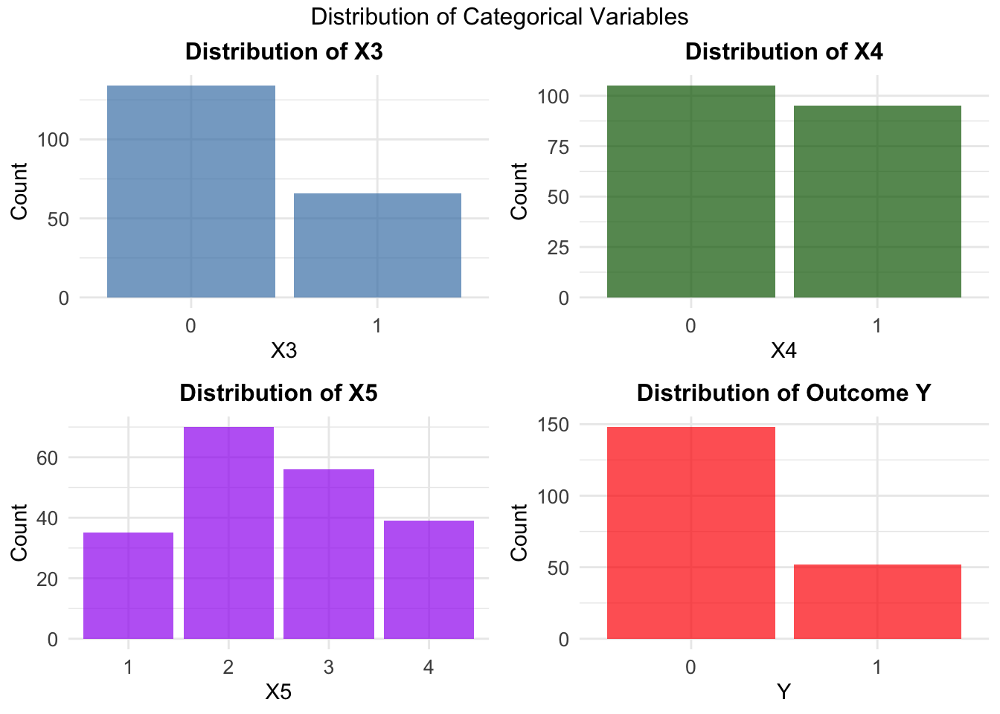
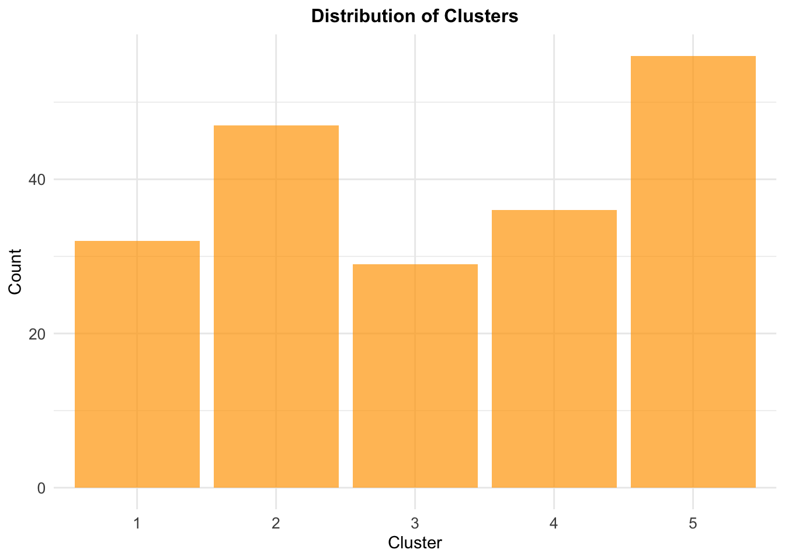
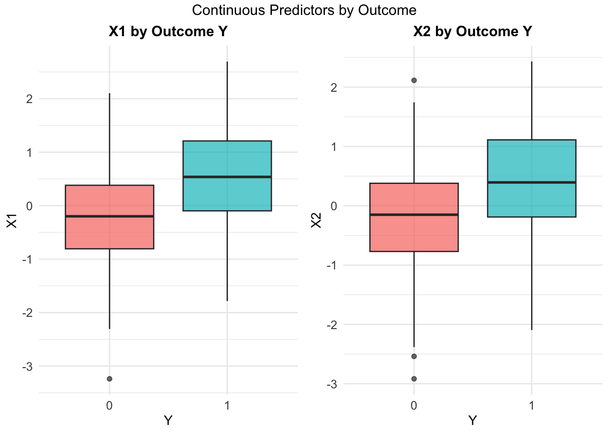
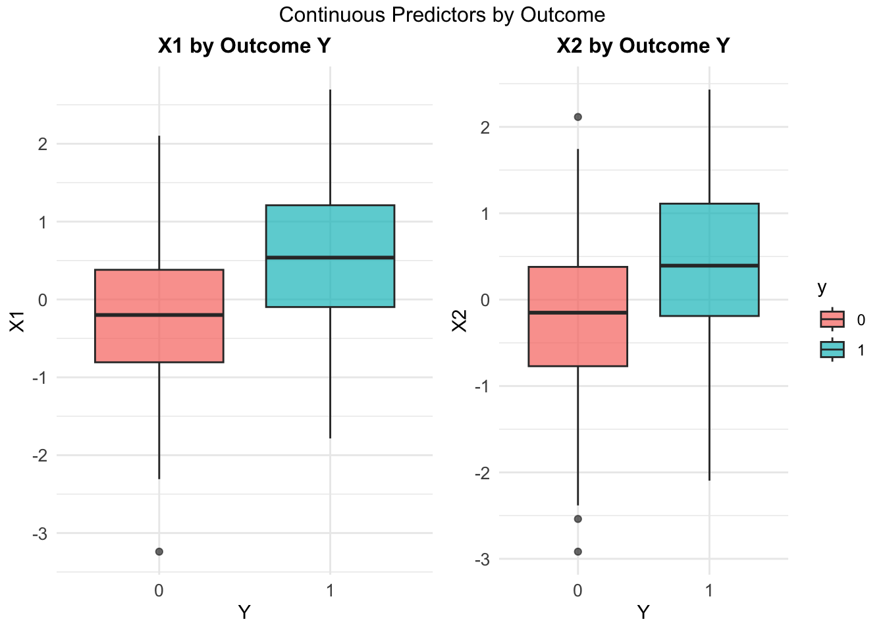

#useful functions
logit <- function(x){log(x/(1-x))}
expit <- function(x){exp(x)/(1+exp(x))}Part 1.1 Data Preparation and Exploration (Binary Outcomes)
The foundation of any prediction model is understanding and preparing your data. This lesson focuses on cleaning, exploring, and structuring the dataset — particularly when the outcome is binary (e.g., disease: yes/no).
1. Expected Background Knowledge
- Basic R programming
- Basic statistics (means, proportions, distribution)
- Familiarity with binary outcomes
2. Learning Objectives
- Understand the structure and content of the dataset
- Identify and handle missing data
- Prepare variables for modeling (e.g., correct formats, imputation)
3. Key Sections
In this part, you will learn about :
- Introduction to the problem
- Data Simulation
- Descriptive statistics & Exploratory data analysis (EDA)
- Handling missing data
- Visualizations
1. Introduction to The Problem
Clinical prediction models aim to forecast future health outcomes given a set of baseline predictors to facilitate medical decision making and improve people’s health outcomes.
Ideally, prediction models are developed using individual participant data from prospective cohort studies designed for this purpose.
We generated a realistic dataset of 200 patients with 10 predictor variables of mixed types (continuous, binary, and categorical) that exhibit complex relationships including quadratic effects and interactions, representative of real clinical data where variables like age, biomarkers, and treatment indicators are often correlated.
Missing values were introduced randomly across approximately 10% of the data points, mimicking the incomplete data patterns frequently encountered in medical studies due to patient dropout, measurement failures, or administrative issues.
The dataset also includes a clustering structure representing different clinical sites or treatment groups, and a binary outcome variable generated through a logistic regression model with known coefficients.
2. Data Simulation
For the first step, we will simulate a data that is included :
- Five predictors x1, x2, x3, x4, x5, of which x1, x2 are continuous, x3, x4 binary, and x5 categorical.
- The outcome y we want to predict.
- Five auxiliary variables z1, z2, z3, z4 and z5. ( Variables related to the predictors but will not be used in the model, but will be used for missing variables imputation)
- A clustering variable clust. ( Provides information about an important stratification of the patients in the data)
First we need to setup memory management, in order to clears all objects from R’s memory to start fresh
Set some functions that will be used.
Data Generation setup
N <- 200
Sigma <- outer(1:10, 1:10, function(x,y) 0.5^abs(x-y)) Generate correlated predictors, by generating 200 observations of 10 correlated variables from multivariate normal distribution. All variables have mean 0 and the correlation structure defined by Sigma
x <- mvrnorm(N, rep(0,10), Sigma)Then transform the variables into different types :
- x3, x4, x9: Binary variables (0/1)
- x5, x10: Ordinal categorical variables (1,2,3,4 levels)
- x8: Three-level variable (0, 0.5, 1)
- x1, x2, x6, x7: Remain continuous
x[,3] <- ifelse(x[,3] > 0.5, 1, 0)
x[,4] <- ifelse(x[,4] > 0, 1, 0)
x[,5] <- cut(x[,5], breaks=c(-Inf, -1, 0, 1, Inf), labels = FALSE)
x[,8] <- ifelse(x[,8] > 1, 0.5, 0)
x[,9] <- ifelse(x[,9] > 1.5, 1, 0)
x[,10] <- cut(x[,10], breaks=c(-Inf, -1, 0.5, 1, Inf), labels = FALSE)Then convert the matrix into data frame. Names first 5 variables “x1” to “x5”, last 5 as “z1” to “z5”
data.bin.complete <- data.frame(x)
colnames(data.bin.complete) <- c(paste0("x", 1:5), paste0("z", 1:5))Then, we generate the binary outcome variables
- Creates a complex logistic regression model:
- Intercept: -2
- Linear and quadratic terms for x1, x2
- Indicator variables for categorical predictors
- Random noise term
- Converts log-odds to probabilities using expit function
- Generates binary outcome y using these probabilities
logit.py <- with(data.bin.complete,-2+x1+0.2*x1^2+
0.3*x2+0.1*x2^2+0.2*(x3==2)+0.2*(x4==2)+0.2*(x5==2)-
0.1*(x5==3)+0.2*(x5==4)+rnorm(N,0,0.1))
py <- expit(logit.py)
data.bin.complete$y <- rbinom(N,1,py)As we have some categorical variables, we need to convert them into factors
data.bin.complete[,c(3:5, 8:10, 11)] <- lapply(data.bin.complete[,c(3:5, 8:10, 11)], factor)Then, we introduce some missing data with 10% probability
- Creates a matrix same size as the data, initially filled with 0s
- Randomly assigns 1s with 10% probability (missing data indicators)
- Copies complete data to new dataset
# introduce missing data
missing.matrix=matrix(0, nrow=nrow(data.bin.complete),
ncol=ncol(data.bin.complete))
missing.matrix=matrix(rbinom(length(missing.matrix),1, p=0.1),
nrow=nrow(data.bin.complete))
data.bin=data.bin.complete
data.bin[missing.matrix==1]=NAThe number of events will be :
data.bin %>% count(data.bin$y) data.bin$y n
1 0 134
2 1 45
3 <NA> 21Then, we create a clustering variable that will provides information about an important stratification of the patients in the data. Each cluster has 20% probability.
## simulate data
data.bin$clust <- factor(sample(1:5, size = N, replace = TRUE, prob =
rep(0.2,5)))
data.bin <- data.bin[order(data.bin$clust),]
head(data.bin) x1 x2 x3 x4 x5 z1 z2 z3 z4 z5 y clust
11 0.1145885 -1.2601838 0 0 2 NA 1.18734162 0 0 2 0 1
21 0.6705792 0.7661398 0 0 3 NA -0.98427143 0 0 4 0 1
30 0.9088665 NA 1 1 3 0.3869922 -0.60442719 0 0 2 0 1
31 0.5760474 0.4124591 0 0 1 -1.8592611 -0.08279744 0 0 4 0 1
32 -0.6488458 0.1137889 0 1 2 -0.7216976 NA 0 0 2 0 1
36 1.5415047 0.5503613 <NA> 0 4 1.3067392 0.53601209 0.5 0 3 0 13. Descriptive Statistics
Based on the data that still contain missing values, the summary of each variable will be look like this.
summary(data.bin[, c("x1", "x2", "x3", "x4", "x5", "y")]) x1 x2 x3 x4 x5
Min. :-3.239080 Min. :-2.91740 0 :118 0 :92 1 :31
1st Qu.:-0.637238 1st Qu.:-0.68184 1 : 58 1 :85 2 :59
Median : 0.092952 Median :-0.02983 NA's: 24 NA's:23 3 :54
Mean :-0.001534 Mean :-0.06562 4 :37
3rd Qu.: 0.577715 3rd Qu.: 0.59991 NA's:19
Max. : 2.695703 Max. : 2.43189
NA's :23 NA's :18
y
0 :134
1 : 45
NA's: 21
To perform the Exploratory Data Analysis, we should handle the missing values first.
4. Handling Missing Data
This code performs multiple imputation to handle missing data using the aregImpute function from the Hmisc package.
The aregImpute function is particularly powerful because it uses flexible regression splines rather than simple linear regression, allowing it to capture complex, non-linear relationships between variables when imputing missing values.
Arguments explained:
data=data.bin: The dataset with missing values- Formula:
I(y)~x1+x2+I(x3)+I(x4)+I(x5)+z1+z2+z3+z4+z5+clustI(y): Identity function for outcome variable yI(x3), I(x4), I(x5): Identity function for categorical variables (treats as is)- All variables are included as predictors for imputing missing values
n.impute=10: Creates 10 different imputed datasetsnk=3: Uses 3 knots for regression splines (controls flexibility)match='closest': Uses closest predicted value for categorical variables
Instead of just filling in missing values once (single imputation), it creates 10 different complete datasets, each with slightly different imputed values.
# get imputed datasets
imputed1=list()
for (i in 1:n.impute){
imputed1[[i]] <- impute.transcan(a, imputation=i, data=data.bin,list.out=TRUE,pr=FALSE, check=FALSE)}After running this code, imputed1 will be a list containing 10 complete datasets:
imputed1[[1]]: First imputed datasetimputed1[[2]]: Second imputed dataset…
imputed1[[10]]: Tenth imputed dataset
Each dataset will have the same structure as the original but with all missing values filled in with plausible estimates. Here is the example of the first out of ten dataset generated.
df = as.data.frame(imputed1[[1]])
head(df) y x1 x2 x3 x4 x5 z1 z2 z3 z4 z5 clust
1 0 0.1145885 -1.2601838 0 0 2 0.26110540 1.18734162 0 0 2 1
2 0 0.6705792 0.7661398 0 0 3 -0.09013217 -0.98427143 0 0 4 1
3 0 0.9088665 0.7075909 1 1 3 0.38699219 -0.60442719 0 0 2 1
4 0 0.5760474 0.4124591 0 0 1 -1.85926106 -0.08279744 0 0 4 1
5 0 -0.6488458 0.1137889 0 1 2 -0.72169765 -1.37296563 0 0 2 1
6 0 1.5415047 0.5503613 0 0 4 1.30673919 0.53601209 0.5 0 3 15. Exploratory Data Analysis (EDA)
For the EDA Parts, we used the first bootstrap list. First we check if the missing values still persist or not.
colSums(is.na(df)) y x1 x2 x3 x4 x5 z1 z2 z3 z4 z5 clust
0 0 0 0 0 0 0 0 0 0 0 0 Then we look at the summary for continuous variable :
continuous_vars <- c("x1", "x2", "z1", "z2")
categorical_vars <- c("x3", "x4", "x5", "z3", "z4", "z5", "y", "clust")
continuous_data <- df[, continuous_vars]
sapply(continuous_data, function(x) {
c(Mean = mean(x, na.rm = TRUE),
Median = median(x, na.rm = TRUE),
SD = sd(x, na.rm = TRUE),
Min = min(x, na.rm = TRUE),
Max = max(x, na.rm = TRUE),
Q1 = quantile(x, 0.25, na.rm = TRUE),
Q3 = quantile(x, 0.75, na.rm = TRUE),
Missing = sum(is.na(x)))
}) x1 x2 z1 z2
Mean -0.04299155 -0.06394527 0.009353791 0.08006544
Median 0.01721418 -0.02279583 0.083944905 0.11778108
SD 0.99018823 1.00673286 0.978500360 0.95916411
Min -3.23907973 -2.91740147 -2.622877327 -2.55781251
Max 2.69570300 2.43188740 2.447348583 2.87592135
Q1.25% -0.68108732 -0.68807959 -0.680973003 -0.59888965
Q3.75% 0.56420817 0.61050810 0.620769343 0.69655319
Missing 0.00000000 0.00000000 0.000000000 0.00000000Then we would like to create some basic visualizations.
# Set up plotting theme
theme_custom <- theme_minimal() +
theme(plot.title = element_text(hjust = 0.5, size = 12, face = "bold"),
axis.text = element_text(size = 10),
axis.title = element_text(size = 11))
# Histograms for continuous variables
p1 <- ggplot(df, aes(x = x1)) +
geom_histogram(bins = 20, fill = "skyblue", alpha = 0.7, color = "black") +
labs(title = "Distribution of X1", x = "X1", y = "Frequency") + theme_custom
p2 <- ggplot(df, aes(x = x2)) +
geom_histogram(bins = 20, fill = "lightgreen", alpha = 0.7, color = "black") +
labs(title = "Distribution of X2", x = "X2", y = "Frequency") + theme_custom
p3 <- ggplot(df, aes(x = z1)) +
geom_histogram(bins = 20, fill = "salmon", alpha = 0.7, color = "black") +
labs(title = "Distribution of Z1", x = "Z1", y = "Frequency") + theme_custom
p4 <- ggplot(df, aes(x = z2)) +
geom_histogram(bins = 20, fill = "gold", alpha = 0.7, color = "black") +
labs(title = "Distribution of Z2", x = "Z2", y = "Frequency") + theme_custom
# Combine plots
grid.arrange(p1, p2, p3, p4, ncol = 2, top = "Distribution of Continuous Variables")
Distribution of all continuous variables are typically similar, as they generated from the same distributions.
The next plot is the distribution of categorical variables and target variable.
# 4.2 Bar plots for categorical variables
p5 <- ggplot(df, aes(x = x3)) +
geom_bar(fill = "steelblue", alpha = 0.7) +
labs(title = "Distribution of X3", x = "X3", y = "Count") + theme_custom
p6 <- ggplot(df, aes(x = x4)) +
geom_bar(fill = "darkgreen", alpha = 0.7) +
labs(title = "Distribution of X4", x = "X4", y = "Count") + theme_custom
p7 <- ggplot(df, aes(x = x5)) +
geom_bar(fill = "purple", alpha = 0.7) +
labs(title = "Distribution of X5", x = "X5", y = "Count") + theme_custom
p8 <- ggplot(df, aes(x = y)) +
geom_bar(fill = "red", alpha = 0.7) +
labs(title = "Distribution of Outcome Y", x = "Y", y = "Count") + theme_custom
grid.arrange(p5, p6, p7, p8, ncol = 2, top = "Distribution of Categorical Variables")
The result showed that in the data target, outcome “0” is more dominant than outcome “1”.
The next plot is the distribution of clusters.
# 4.3 Cluster analysis
p9 <- ggplot(df, aes(x = clust)) +
geom_bar(fill = "orange", alpha = 0.7) +
labs(title = "Distribution of Clusters", x = "Cluster", y = "Count") + theme_custom
print(p9)The cluster is dominated by cluster 5 and 2, while cluster 1,3,4 has less value others.
Additionally, we will also take a look at correlation in each variable by using correlation matrix.
# 4.4 Correlation matrix for continuous variables
cont_data_complete <- na.omit(df[, continuous_vars])
cor_matrix <- cor(cont_data_complete)
# Correlation plot
corrplot(cor_matrix, method = "color", type = "upper",
order = "hclust", tl.cex = 0.8, tl.col = "black",
title = "Correlation Matrix of Continuous Variables",
mar = c(0,0,1,0))
Some variables are highly correlated such as variables X2 and X1, Z2 and Z1. While others have relatively low correlation.
The next plot will figure out the distribution of continuous predictors with outcome.
# Outcome by continuous predictors (boxplots)
p10 <- ggplot(df, aes(x = y, y = x1, fill = y)) +
geom_boxplot(alpha = 0.7) +
labs(title = "X1 by Outcome Y", x = "Y", y = "X1") + theme_custom +
theme(legend.position = "none")
p11 <- ggplot(df, aes(x = y, y = x2, fill = y)) +
geom_boxplot(alpha = 0.7) +
labs(title = "X2 by Outcome Y", x = "Y", y = "X2") + theme_custom
grid.arrange(p10, p11, ncol = 2, top = "Continuous Predictors by Outcome")
The results show that the distribution between X1 by Outcome Y is similar with X2 by Outcome Y.
vars <- c("x3", "x4", "x5", "clust")
plot_list <- list() # to store plots
for (var in vars) {
p <- ggplot(df, aes_string(x = var, fill = "factor(y)")) +
geom_bar(position = "fill") + # stacked proportion bars
ylab("Proportion") +
labs(fill = "y", title = paste(var," by Outcome Y")) + theme_custom
plot_list[[var]] <- p
}
# Arrange all plots in a 2x2 grid
grid.arrange(grobs = plot_list, ncol = 2, top = "Cetagorical Predictors by Outcome")
The plot shows that the distribution of categorical variables in each outcome has been proportional.
4. Conclusion
This comprehensive simulation study demonstrates a robust approach to prepare and understand clinical data. By generating a realistic dataset with mixed variable types, non-linear relationships, and clustered observations, we created a representative scenario that mirrors real-world clinical research challenges. We will also be able to handle missing data in complex biomedical datasets through multiple imputation techniques. The exploratory data analysis revealed the intricate structure of the data, including correlation patterns, distributional characteristics, and the impact of clustering on outcome variables.